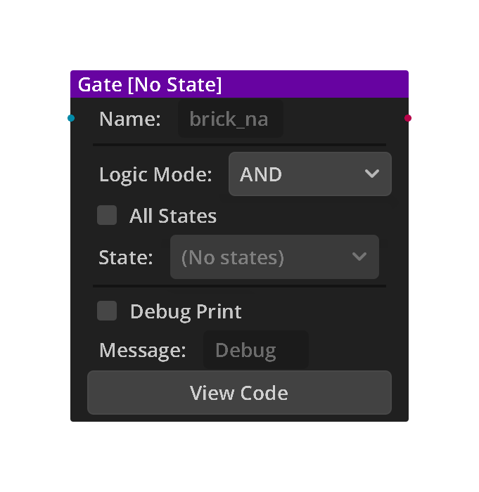
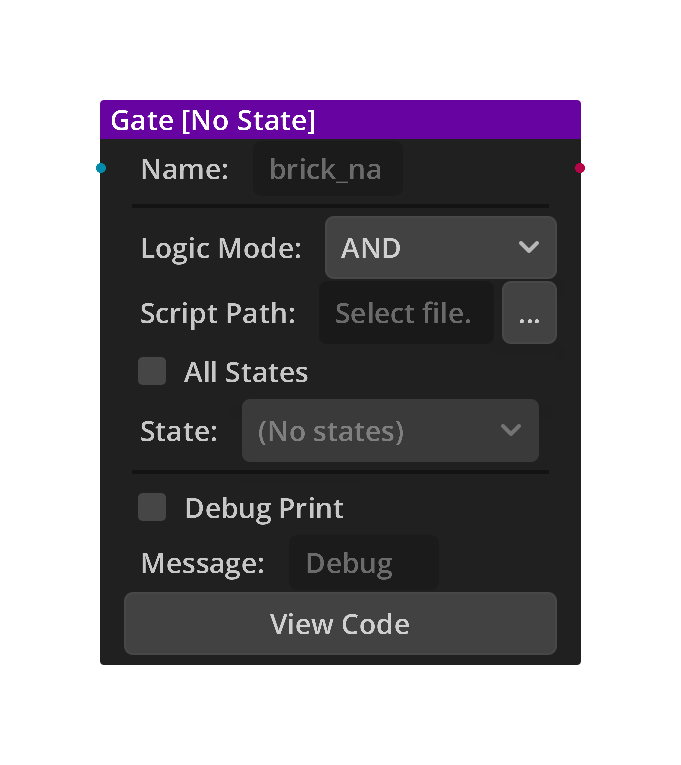

2D Gates
2 gates available for 2D workflows.
Source of truth
This page lists only bricks registered by the uploaded addon. Legacy aliases and compatibility script shims are not presented as separate menu entries.
Chapter guide
How gates fit into a chain
Gates decide whether connected trigger results are allowed to continue. They keep conditions separate from the actions that follow.
- Connect one or more Triggers.
- Choose the logic mode or script module.
- Connect the Gate output to the Actions that should run.
gate • 2d
Gate
Logic gate that combines Trigger inputs.
- AND: all Triggers must be active. OR: any Trigger active.
- NAND/NOR/XOR: inverted and exclusive logic.
Options
| Property | Details |
|---|---|
logic_mode
|
Logic Mode
Choices: AND, OR, NAND, NOR, XOR Default:
AND
Logic gate type: • AND: All connected Triggers must be active • OR: At least one Trigger must be active • NAND: NOT AND — active when not all Triggers are active • NOR: NOT OR — active only when no Triggers are active • XOR: Exclusive OR — active when exactly one Trigger is active |
all_states
|
All States
Default:
false
|
state_id
|
State
Choices: the node's states (set up in the States panel) |
Using this brick
Typical uses
- Combine one or more trigger results before actions run.
- Keep decision-making separate from the actions that follow.
- Switch between AND, OR, NAND, NOR, and XOR without adding separate gate bricks.
Example chain
Input
Gate
Character Jump
Tip
Use AND when every connected trigger must be true, and OR when any one is enough.
Common mistake
Adding separate gates for AND, OR and NOT. Choose the mode inside one Gate brick.
Tip
Use AND when every connected condition must be true, and OR when any connected condition may continue the chain.
Common mistake
Do not create separate bricks for AND, OR, NAND, NOR, or XOR; choose the mode inside the Gate brick.

gate • 2d
Script Gate
Calls a function in a custom .gd script when triggers fire. Runs a custom GDScript module function: no separate Action is needed — the script performs the action.
Options
| Property | Details |
|---|---|
logic_mode
|
Logic Mode
Choices: AND, OR, NAND, NOR, XOR Default:
AND
Logic gate type: • AND: All connected Triggers must be active • OR: At least one Trigger must be active • NAND: NOT AND — active when not all Triggers are active • NOR: NOT OR — active only when no Triggers are active • XOR: Exclusive OR — active when exactly one Trigger is active |
script_path
|
Script Path
File: *.gd Path to the .gd script file to run. The script must define: func run(node: Node) -> void: 'node' is the scene object this brick is attached to. Do NOT add 'extends' to the script — it is called as a module. |
all_states
|
All States
Default:
false
|
state_id
|
State
Choices: the node's states (set up in the States panel) |
Using this brick
Typical uses
- Combine one or more trigger results before actions run.
- Keep decision-making separate from the actions that follow.
- Call a small reusable GDScript module when visual logic needs custom behavior.
Example chain
Collision
Script Gate
Tip
Keep the module small. It needs a top-level func run(node: Node) -> void.
Common mistake
Writing the module like a node script with extends and _ready(). It is called as a module, not attached.
Tip
Keep the module function small and focused, and test its file path before connecting it to a larger chain.
Common mistake
The module script must expose the function format described above; it is not used like a normal node script.
